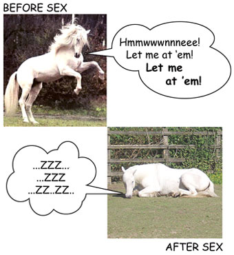

GENIUS HOME - Reader's Creative Thinking Questions : Sex Transmutation Q&A 3A ...
A Player's Questions and Thoughts About Sexual Transmutation
A self-confessed womanizer seeks some clarity on sexual transmutation
Ray read my article on sex transmutation and wrote the following to me:
Sexy Transmutation question
From: Ray
Sent: 15 July 2008
To: wily[at]wilywalnut.com
I was reading 'Think & Grow Rich' and got to the 'Sex Transmutation' chapter (which I found fascinating), which lead me to
your sex transmutation article. I have always been a skirt chaser, womanizer type, so the topic is of great interest to me. Perhaps if I can channel this
energy into more creative avenues, I will achieve greatness? However, both the chapter in Hill's book and your article seem to hint at
something but don't really say it outright. Isn't the message just 'stay horny' but don't always succumb to your
horniness?
Ray
He immediately followed this with:
One more thing
From: Ray
Sent: 15 July 2008
To: wily[at]wilywalnut.com
Also, as a follow up to my last email, the point that hits home the hardest (pun intended) was:
#5. Staying horny and then channeling that into creative thought.
#3 (get yourself a muse), I am not so sure about, because often times, that 'muse' can be distracting and/or a source of
stress. It's not that #3 is totally without merit, I love the idea of courtship etc. but it does involve another person, an unknown
factor that might complicate things.
I have just realized that what I thought was my greatest weakness i.e. non stop women, was actually my greatest
strength.
Thank you Wily Walnut and Napolean Hill
Ray
Here is my reply:
From: Wily Walnut
Sent: 15 July 2008 11:26:38
To: Ray
Hi Ray,
Thanks so much for your email, question and observations.
Yes, you could say the essential message is 'stay horny'. Arnold Schwarzenegger put it another way
in the movie 'Pumping Iron' when he revealed his philosophy as being, 'stay hungry'.
Both messages entail the idea of 'keeping your edge', not letting yourself become totally sated, keeping in that going-for-it state
that is similar in would-be-lovers, entrepreneurs trying to build their fledgling business, or athletes going for gold medals.
Time and again, you read interviews with successful people and they'll say that their happiest time was not when they had achieved the great
success, but when they were on the journey towards it.
It's the same with sex. Beforehand your whole body and mind is straining to get into the pants of the girl you're chasing after. She looks so
good. Nothing else really matters but being with her, and getting it on with her. You are keyed up and straining on the leash. She looks so
damn gorgeous that you just gotta have her...
Fast forward to 1 minute after sexual ejaculation... and, 'ugh, she ain't that great looking!' It's almost like the madness leaves you, and
you are no longer possesed by the lust. On one hand it's quite a good state because you have some clarity and self-possession again. But on
another level you are just tired and sleepy and not that bothered about anything anymore (except maybe eating or sleeping or getting the hell
out of there!).

The idea is that sexual energy keeps you keen and interested in life. It helps spur you on
to greater achievements so that you rise up to a greater sexual status in the human pack.
In modern times, we have access to 24/7 porn, we're much more liberal about sexuality and masturbation, there is more casual recreational sex
-- all of which makes it a lot easier to get laid or to get off. This can all lead to a slackening off in personal ambition or creativity.
You just don't have to work so hard for 'it'.
Of course, some guys have attributes and advantages that propel them higher in sexual status than other guys who have achieved a lot
materially or creatively. If they are very attractive, charismatic or fulfil some kind of 'bad boy' role, they get laid easier than others.
They might suffer in other ways by not getting sufficiently motivated to exercise their deeper creativity to manifest prosperity and
wealth.
Regarding #3 of my article (get yourself a muse), I acknowledge your reservations. One way to incorporate this concept without getting tied
up and tied down with any one particular woman is to make the muse the 'idea of woman', or what I call the Universal Woman.
I noticed when reflecting back on the various women that I had dated and mated as a younger
man, that there was a kind of common theme running through them all... and I started referring to this as the Goddess or Universal Woman.
This is a kind of 'spiritualization' ... another kind of transmutation, if you like, in which I inwardly chose to believe that I was not in
relationship with individual women (and all the individual concerns and hang-ups) but with an archetypal soul mate, the Goddess... or just
God, manifest as woman.
Where muses are generally concerned, it is often the case that one can never have that woman (either because she is out of your league, of
another class, or a movie star or something like that). That sense of separation enables you to idolize the woman, to make her perfect in
your mind, and worship her from afar. This drives creativity in a very similar way that religious devotion drives creativity -- as a
dedication to the Beloved.
Many men find their ideals dashed when they do get close with their ideal woman and discover that she is an appalling liar, farts in her
sleep, or whines non-stop. Others can develop a relationship and allow their own minds to lovingly overlook the faults of their partner,
while putting aspects of her appearance, character or behavior on a pedestal to be worshipped in some way. this would be the case with say,
someone like Paul McCartney writing a love song about his wife.
|
|
|
|
A note: Idealizing any woman while
perhaps good for creativity can put unnecessary pressure on a relationship. Being feted and put on a pedestal is certainly
nice on occasions, but most women will settle for respect and a good ear. Few people like the pressue of having to live up to
images of perfection because we all know how transient and illusory those are in the physical world. Part of being truly
creative is learning to love and accept people for what they are, seeing beauty and perfection in imperfection. In this
spirit, love can truly blossom. And nothing is more creative than that. |
|
|
|
|
Having a 'player' lifestyle is a wonderful opportunity to use your creativity and funnel your sexuality into using more and more of your
mind. Many of the seduction 'gurus' demonstrate this very well, developing sophisticated ways to use language to elicit the deepest responses
of a woman and give her 'the time of her life' with mind-blowing sexual, romantic experiences. They also manage to rise above their
sexuality, perhaps because of the transient nature of their relationships with women, to funnel their energies into developing successful
businesses (like Eben Pagan, Mystery, Ross Jeffries) and teaching systems that help and benefit others.
I think it's wonderful that you have released the negative judgements you were holding in your mind (thinking that you had a weakness) and
that you have reframed it as your greatest strength. May men would love your life style but they don't have your skills, courage or abilities
to achieve it. You have become a 'master' in this area and can turn that mastery to your advantage in others.
All creativity is an act of self-determination, reframing the raw materials of life into what you decide to make of it. You are the creator,
the creative force, and sexual energy is the fiery manifestation of that creative force.
Wishing you the best of the best,
Wily Walnut
Continues: Ray replies with description of how he applied sex
transmutation and the results he got, plus more on creative muse: HERE!
Related Articles:
|
THE BRAIN SQUEEZER NEWSLETTER!
Sign-Up
For Wily Walnut's "The Brain Squeezer" Newsletter and learn to squeeze all the creative thinking juices from your brain!
Get your juiciest ideas and genius IQ power flowing!
Wily Walnut: Discover How To Banish The Inner Moron, Shake
Off the Dust Of Mediocrity and Discover the Genius You Were Born To Be!
|
Wily Walnut is the headbrain at http://www.WilyWalnut.com, your top resource for
unleashing the genius within, becoming infinitely creative, intelligent and brilliant in all that you
do!
GENIUS ARTICLES HOME IQ TESTS - CREATIVITY - GENIUS - BRAIN STORMING - SELF-HELP - BRAINTEASERS - WILY WALNUT


|